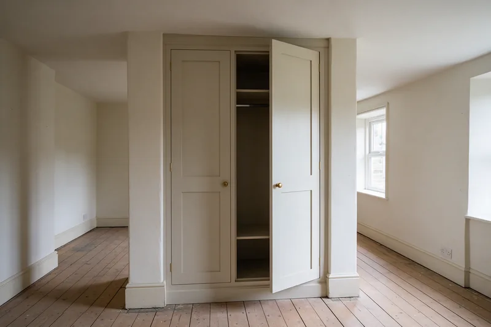

Generated photoGenerated for this demo. Not a photograph of a real job.
The short version
Fitted makes sense when the space is awkward, when the ceiling is high, or when you want the wall to read as part of the room. Freestanding makes sense when you are renting, when you might move soon, when the room is square and a standard width, or when you would rather spend the money on something else. Neither is better in general. They are better at different jobs.
What you are actually buying with a fitted job
Three things. The first is the space you cannot otherwise use: the wedge behind a bought wardrobe in an out of square alcove, the foot of dead height above it, and the awkward corner next to a chimney breast. In a small bedroom that is a lot of hanging space.
The second is the look. One flat front from floor to ceiling and wall to wall, with no daylight down the side and no dust shelf on top. It reads as part of the house rather than as furniture that happens to be stood there.
The third is that the inside is yours to decide. Hanging height for what you actually own, shelves where you want them, drawers low enough to see into. A bought wardrobe is a compromise designed for an average person's clothes.
What you give up
It does not come with you when you move, and it will not be reflected pound for pound in what the house sells for. It costs more than a flat pack, because somebody is measuring, making and fitting rather than packing a box. It takes longer to get, and it is harder to change your mind about afterwards: moving a rail in a fitted wardrobe means taking a front apart.
And in a square modern bedroom of a standard width, a decent bought wardrobe can look fine and cost a fraction. We would tell you that rather than sell you a fitted one you do not need.
Why the alcove is never square
In an older stone house the walls lean, they bow in the middle, and the back wall is not a true right angle to either side. Measure the alcove at the front, the middle and the back and you will often get three different numbers. That is normal and it is not a fault.
A bought wardrobe is square, so it can only be set to the narrowest point. Everything wider than that point becomes gap. A fitted one keeps the carcass square, because doors and drawers need it, and puts the difference into a tapered filler each side and a panel across the top, each of them marked off the actual wall and cut to follow it.
Questions worth asking whoever quotes you
Is the carcass going to be square and how are you taking up the difference. Does it go to the ceiling and how is the top closed. What is the carcass made of and what are the doors made of. What hinges or sliding gear, and what weight are they rated to carry. How is the skirting dealt with at the bottom. Is the inside fixed or can shelves be moved later.
Somebody who answers all six plainly is a joiner. Somebody who only wants to talk about door styles is a salesperson.
The thing most people get wrong
Leaving the inside until last. The inside is cheap to change on a sheet of paper and expensive to change once the carcass is built. Before anybody makes anything, go and look at what is actually in your current wardrobe: how many long items, how many shirts, how much folds rather than hangs, where the shoes go. Then build for that rather than for a showroom layout.
Written for this demo from general trade knowledge. It is not advice on your property, and anything structural, anything wet and anything to do with fire doors or permissions wants somebody looking at the actual house.
In plan
Pushed in, or built in.
The same alcove twice from above. The lean on the walls is exaggerated, but only a bit.
Bought, and pushed into the alcove
The unit is square. The alcove is not, because the walls lean and bow and the chimney breast is not a true right angle. So it has to be set to the narrowest point, which leaves a gap down each side that gets wider as it goes back, and a gap on top. The gaps collect dust and boxes, and the one thing nobody can fix is the daylight you can see down the side.
Built in, with the difference scribed out
The carcass still has to be square, because doors and drawers only work if it is. What changes is that a tapered filler each side and a panel on top are marked off the actual wall and cut to follow it, bows and all. From the room you see one flat front, floor to ceiling, wall to wall. All the lying is in the fillers, which is exactly where it belongs.
More advice
While you are here.
 Generated photo
Generated photoWhy internal doors stick and what fixes it
Four causes, and only one of them is the door. How to tell which one you have before anybody takes a plane to it.
 Generated photo
Generated photoTimber windows: repair before you replace
How to find out how much of the window is actually gone, and why the rotten bit is usually smaller than it looks.
Want somebody to look at the actual thing?
Tell us the job and your postcode. Twenty minutes with a tape and an awl beats any article.